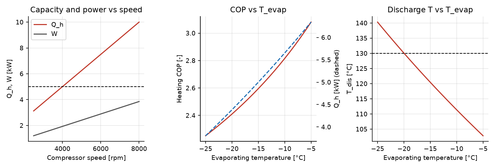
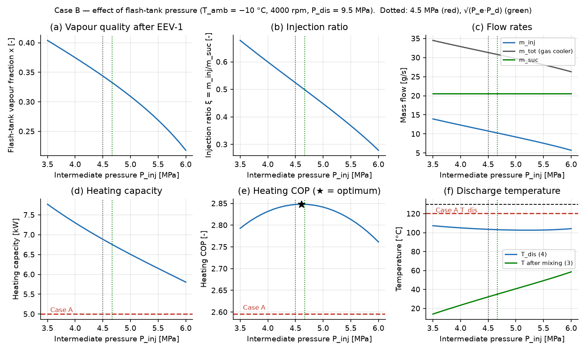
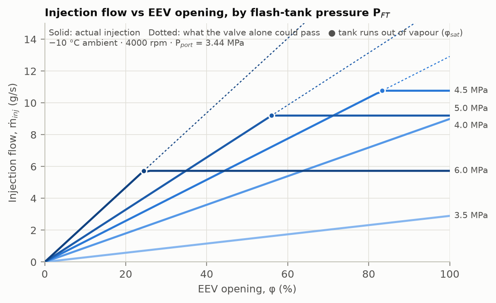
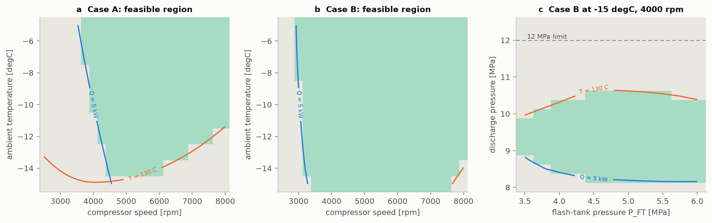
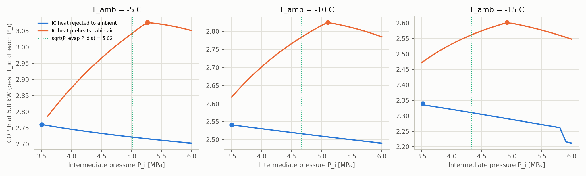
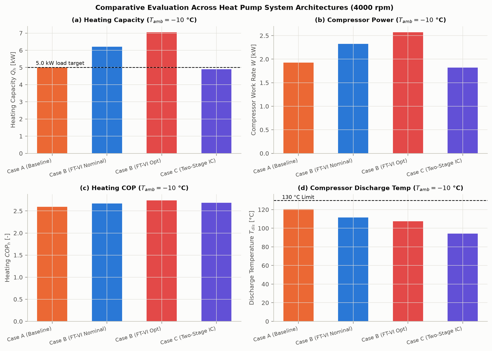

I. Definition & Understanding of Problem
Electric vehicles (EVs) rely on electrically powered heat pumps for passenger cabin heating and thermal management, making heat pump efficiency directly tied to traction battery energy consumption and vehicular driving range. In conventional internal combustion engine (ICE) passenger cars, cabin heating is provided virtually without penalty by harvesting high-temperature waste heat rejected to the engine cooling jacket (~20–30 kW thermal). Conversely, modern Battery Electric Vehicles (BEVs) operate with drivetrain efficiencies of 90%–95%, yielding insufficient waste heat (rarely exceeding 1–2 kW during steady cruising) [1], [2]. Maintaining a comfortable passenger cabin target of 20 °C under sub-zero winter weather (−5 °C down to −15 °C) requires 5.0 kW of steady heating power.
Traditional electric vehicles rely on Positive Temperature Coefficient (PTC) resistive electric heaters. Because PTC elements operate with a thermodynamic Coefficient of Performance of COP = 1.0, supplying 5.0 kW of heating draws 5.0 kW of continuous electrical power directly from the traction battery. Over a 1-hour highway driving cycle, this extracts 5.0 kWh of stored electrical energy, diminishing vehicle driving range by 30% to 45% [3].
Vapor compression heat pumps offer a compelling alternative by pumping low-grade ambient heat into the vehicle cabin, achieving typical heating COPs between 2.0 and 3.0, thereby slashing battery drain by 50% to 65%. However, conventional single-stage vapor-compression heat pumps (Case A) suffer severe performance degradation at low ambient temperatures. Because the evaporating refrigerant must stay colder than the outside air to absorb heat, sub-zero weather forces the evaporator pressure down (P_evap = 2.29 MPa at T_amb = −10 °C), collapsing suction vapor density to ~60.1 kg/m³. Meanwhile, the compressor must still deliver a large pressure lift up to 9.5 MPa to supply comfort heating to the cabin. Using carbon dioxide (R744) as the working fluid, this steep pressure ratio (PR > 4.15) severely degrades volumetric efficiency, reducing refrigerant mass flow and heating capacity below the required 5.0 kW load at −10 °C and −15 °C. Simultaneously, steep isentropic compression drives compressor discharge temperatures dangerously close to or above the 130 °C safety threshold where polyalkylene glycol (PAG) lubricant oil and compressor reliability degrade [4].
Vapor injection addresses this thermodynamic bottleneck by introducing saturated refrigerant vapor from a flash tank into the compressor at an intermediate pressure between suction and discharge. Because the injected vapor is already at a higher pressure from within the cycle, it increases the total refrigerant mass flow rate through the high-pressure stage while breaking the steep single-stage compression lift into two smaller pressure ratios. Mixing this cooler intermediate-pressure vapor with the Stage-1 suction gas lowers the compressor discharge temperature to safe operating levels, reduces specific compression power consumption, and increases overall heating capacity and coefficient of performance (COP). Two-stage compression with mid-stage intercooling represents an alternative architecture that similarly splits the pressure ratio and lowers discharge temperature, though without augmenting high-stage mass flow. Both of these serve as potential solutions to the problem.
| Parameter | Symbol | Value | Unit |
|---|---|---|---|
| Ambient Temperature (Design) | T_amb | -10.0 | °C |
| Required Heating Load | Q_load | 5.00 | kW |
| Gas Cooler Discharge Pressure | P_dis | 9.50 | MPa |
| Gas Cooler Exit Temperature | T_gc_out | 35.0 | °C |
| Evaporator Approach & Superheat | ΔT_app, SH | 5.0, 5.0 | K |
| Compressor Speed Range | N | 4000 [2500, 8000] | rpm |
| Max Discharge Temperature | T_dis_max | 130.0 | °C |
| Calibrated Displacement | V_disp | 8.878 | cm³ |
II. Project Objectives
The primary goal of this project is to model a transcritical R744 electric vehicle heat pump and optimize its cold-weather performance. Specific objectives include:
1) Baseline Modeling (Case A): Establish a calibrated steady-state model of a conventional single-stage R744 heat pump at the −10 °C design ambient condition to benchmark heating capacity (Q_h), compressor power (W), heating coefficient of performance (COP_h), and discharge temperature (T_dis).
2) Flash-Tank Vapor Injection (Case B): Extend the baseline cycle with an adiabatic flash tank, two-stage throttling (EEV-1 and EEV-main), a compressible orifice injection electronic expansion valve (EEV_inj), and an off-design two-stage compressor map.
3) Two-Stage Intercooled Cycle (Case C): Model an alternative two-stage compression cycle with a counter-flow intercooler between the two compressor stages instead of vapor injection (evaluating both ambient heat rejection and cabin air preheating recovery) and compare its intermediate pressure optimum against the geometric-mean estimate √(P_evap · P_dis).
4) Parametric & Cold-Weather Sensitivity Analysis: Quantify the individual and coupled effects of flash-tank/intermediate pressure (3.5–6.0 MPa), injection EEV opening (0–100%), compressor speed (2,500–8,000 rpm), and discharge pressure (7.5–12.5 MPa) across −5 °C, −10 °C, and −15 °C ambient conditions.
5) Multi-Objective Optimization: Extract the 3D Pareto frontier maximizing COP_h, maximizing Q_h, and minimizing T_dis subject to hard engineering constraints (Q_h ≥ 5.0 kW, T_dis ≤ 130 °C, P_dis ≤ 12.0 MPa, 2,500 ≤ N ≤ 8,000 rpm), and select a single recommended operating point with clear engineering justification using TOPSIS and Knee-Point decision methods.
III. Relevant Background & Governing Theory
A. Basic Working Principle & Transcritical CO2 Cycles
A heat pump absorbs low-grade thermal energy from cold ambient air via refrigerant evaporation, upgrades that thermal energy to a higher temperature and pressure via mechanical compression, rejects useful heat to the cabin air in the condenser/gas cooler, and drops back to low pressure through an expansion valve to complete the cycle.
In a standard subcritical vapor compression cycle, heat rejection occurs via condensation below the critical point. For carbon dioxide (R744), the critical temperature is T_c = 30.98 °C (P_c = 7.38 MPa). Because automotive passenger cabin heating requires hot air delivery at 40 °C to 45 °C (well above T_c), condensation at constant temperature is physically impossible. Instead, R744 systems must operate transcritically: heat absorption occurs at subcritical pressures in the outdoor evaporator, while heat rejection takes place at supercritical pressures (P_dis > P_c) in a continuous single-phase Gas Cooler [1], [5].
The primary cycle components are modeled under realistic engineering conventions:
• Evaporator and Gas Cooler: Modeled as isobaric heat exchangers (ΔP = 0), where heat transfer is governed by refrigerant enthalpy change and air-side thermal capacity.
• Compressor: Modeled using an isentropic compression reference corrected by an isentropic efficiency (η_is) to account for internal irreversibilities, alongside volumetric efficiency (η_v) for actual mass flow.
• Expansion Valves (EEVs): Modeled as adiabatic, isenthalpic throttling devices (h_in = h_out).
B. Case A: Single-Stage Baseline Governing Correlations
The conventional cycle consists of suction state 1 (P_evap, T_evap + ΔT_sh), isentropic compression 2s, actual discharge 2, isobaric gas cooling 3, and isenthalpic expansion 4 (h_4 = h_3). The thermal performance is governed by:
For a realistic compressor, the volumetric efficiency is governed by the overall pressure ratio:
where EV_0 = 0.97 and EV_1 = 0.03. Compressor displacement is calibrated such that Case A delivers exactly Q_load = 5.0 kW at N = 4000 rpm, T_amb = −10 °C, and P_dis = 9.5 MPa, yielding V_disp = 8.878 cm³. The refrigerant mass flow swallowed is:
The realistic isentropic efficiency follows the empirical quadratic pressure-ratio and speed-dependent correlation developed by Student 4:
C. Case B: Flash-Tank Vapor Injection Governing Correlations
The FT-VI architecture introduces an intermediate flash tank that phase-separates expanded two-phase refrigerant into saturated vapor (state 7) and saturated liquid (state 8). Saturated liquid expands through the main EEV into the evaporator, providing suction flow ˙m_suc. Saturated vapor is injected through a secondary injection EEV into the compressor at port pressure P_port, augmenting the total mass flow swallowed by Stage 2 to ˙m_tot = ˙m_suc + ˙m_inj.
The intermediate injection port pressure is coupled to the evaporator pressure:
The flash tank vapor quality is determined from an adiabatic First-Law energy balance:
Compressible flow through the injection EEV experiences sonic choking when the pressure ratio exceeds the critical ratio:
The injection valve mass flow is governed by the compressible orifice formulation:
Flash tank mass balance dictates that continuous vapor injection cannot exceed the rate of flash vapor generation:
D. Case C: Two-Stage Intercooled Cycle Correlations
In Case C, the compressor is divided into two discrete stages with an intermediate gas cooler (intercooler) rejecting heat ˙Q_IC:
When intercooler heat is recovered to pre-heat cabin air, the mixed cabin air temperature entering the main gas cooler is:
Two intercooler modes are evaluated: Reject (Q_ic rejected to ambient, Q_use = Q_gc) and Recover (cabin air passes intercooler first, then gas cooler: Q_use = Q_gc + Q_ic).

IV. Methodology
A. Thermodynamic Property Backend & Balance Closure
Calculations use the high-accuracy CoolProp Span-Wagner Equation of State (EOS) for CO2 (IIR reference state: h = 200 kJ/kg, s = 1.0 kJ/kg-K at 0 °C saturated liquid) with an analytical Peng-Robinson cubic EOS fallback. Machine-epsilon conservation checks verify mass and First-Law energy closures across every state:
B. 3D Parameter Sweep & Multi-Objective Optimization
The decision variable space was discretized into 7,056 grid points:
• Flash tank pressure P_FT: 3.50 to 6.00 MPa (11 steps of 0.25 MPa)
• Injection valve opening φ: 0.05 to 1.00 (20 steps of 0.05)
• Compressor speed N: 2500 to 8000 rpm (23 steps of 250 rpm)
Candidate points were filtered against hard constraints: T_dis ≤ 130 °C, P_dis ≤ 12.0 MPa, and Q_h ≥ 5.0 kW. A fast non-dominated sorting algorithm extracted the non-dominated Pareto frontier across objectives: max COP_h, max Q_h, and min T_dis.
C. Multi-Criteria Decision Making (TOPSIS)
From the Pareto set, TOPSIS constructs a normalized decision matrix r_ij = x_ij / (Σ_k x_kj²)0.5, applies criteria weights (w_COP = 0.40, w_Q = 0.40, w_T = 0.20), identifies ideal (A*) and negative-ideal (A−) solutions, and ranks points by relative closeness:
The Knee-Point minimizes Euclidean distance to the Utopia point.
V. Individual & Group Approach
The capstone project was executed across six specialized student roles within the Department of Mechanical Engineering at IIT Bombay. Below, each student's individual technical report summarizes their specific engineering scope, physical models, individual optimizations, key results, and representative figures.
A. Student 1: Baseline EV Heat Pump Modeling & Displacement Calibration (Kartik Gupta — Roll No: 24B2152)
1) Scope & Modeling: Student 1 developed the baseline single-stage vapor compression heat pump (Case A) operating transcritically with R744. Compressor displacement was calibrated to deliver exactly Q_load = 5.00 kW at T_amb = −10 °C, N = 4000 rpm, and P_dis = 9.5 MPa, establishing V_disp = 8.878 cm³ (with CoolProp Span-Wagner EOS).
2) Results & Optimization: Speed sweeps (N ∈ [2500, 8000] rpm) and gas cooler pressure sweeps (P_dis ∈ [7.5, 12.5] MPa) were conducted (Fig. 1a). At −5 °C, optimum discharge pressure was identified at P_dis = 9.0 MPa (peak COP = 2.83). However, at extreme −15 °C ambient, suction vapor density collapses to 47.6 kg/m³ and overall pressure ratio surges to PR = 4.84. Consequently, compressor discharge temperature escalates to 130.4 °C, violating the 130 °C PAG lubricant safety limit and causing heating capacity to fall short (4.39 kW), demonstrating baseline feasibility failure.

B. Student 2: Flash Tank Phase Separation & Intermediate Pressure Modeling (Durgesh Nimse — Roll No: 24B2226)
1) Scope & Modeling: Student 2 introduced the adiabatic intermediate flash tank to phase-separate the two-phase refrigerant after primary expansion (EEV-1). Vapor quality x_FT was formulated from adiabatic First-Law energy balance: x_FT = (h_5 − h_f)/(h_g − h_f). Saturated vapor is extracted from the top and injected into the compressor at intermediate port pressure P_port = 1.5 P_evap, while saturated liquid drains into the evaporator.
2) Results & Optimization: Parametric sweeps over intermediate pressure P_FT ∈ [3.5, 6.0] MPa were conducted (Fig. 2a). As P_FT increases, flash vapor fraction drops from 0.465 (at 3.5 MPa) to 0.180 (at 6.0 MPa), and maximum injection ratio μ_max drops from 0.87 to 0.22. An optimum intermediate pressure was identified at P_FT = 4.25–4.50 MPa, which maximizes heating COP by balancing liquid subcooling enthalpy gains (Δh_evap) against Stage-2 desuperheating benefits.

C. Student 3: Injection EEV Orifice Modeling & Sonic Choking Flow Control (Disha Jain — Roll No: 24B2125)
1) Scope & Modeling: Student 3 modeled the secondary injection EEV using a compressible orifice formulation incorporating expansion factor Y(ΔP_eff) and critical pressure ratio r_crit = [2/(k+1)]^[k/(k-1)] = 0.546. Maximum valve flow area was sized as CdA_max = 1.176 mm² (d_eq = 1.22 mm) to provide a 20% control margin.
2) Results & Optimization: Swept injection opening φ ∈ [0.05, 1.00] across multiple ambients (Fig. 3a). Discovered the valve saturation phenomenon (φ_sat): at P_FT = 4.5 MPa, increasing φ beyond 83.3% results in valve flow capacity exceeding flash vapor generation (˙m_valve > ˙m_inj,max), causing the system to transition smoothly from valve-throttling limit to tank vapor-generation limit. Operating fully open (φ = 100%) maximizes injection mass flow (˙m_inj = 11.04 g/s), delivering maximum Stage-1 desuperheating and suppressing discharge temperature by over 12 K.

D. Student 4: Off-Design Compressor Mapping & Operating Envelopes (Garva Chirag — Roll No: 24B2269)
1) Scope & Modeling: Student 4 developed the empirical two-stage compressor efficiency map incorporating speed- and pressure-ratio-dependent isentropic efficiency η_is(n, PR) and volumetric efficiency η_v(PR). Formulated the off-design stage work distribution and hard operating limits (T_dis ≤ 130 °C, P_dis ≤ 12.0 MPa).
2) Results & Optimization: Evaluated the full operating envelope (Fig. 4a). Demonstrated that FT-VI expands the feasible operating envelope fraction by +44.7% over baseline (87.0% feasibility vs 60.1%). Solved the cold-weather load-matching problem: to deliver 5.0 kW at −10 °C, FT-VI requires only 3032 rpm (nominal) and 2800 rpm (optimized) vs 4000 rpm for Case A; at −15 °C, while Case A violates thermal limits (T_dis = 130.4 °C), FT-VI operates safely at 3197 rpm with T_dis = 116.8 °C.

E. Student 5: System Integration & 3D Multi-Objective Optimization (Anmol Raj — Roll No: 24B2260)
1) Scope & Modeling: As lead system integrator, Student 5 coupled component models from Students 1–4 and 6 into a unified iterative solver (optimization_vi.py). Implemented machine-epsilon mass and energy balance checks (< 6 × 10−15 kW error). Conducted a 3D multi-objective optimization across P_FT ∈ [3.5, 6.0] MPa, φ ∈ [0.05, 1.00], and N ∈ [2500, 8000] rpm (7,056 grid evaluations).
2) Results & Optimization: Extracted the 45 non-dominated Pareto solutions and applied TOPSIS multi-criteria decision making. Selected and justified the recommended operating point (P_FT = 4.25 MPa, φ = 100%, N = 4000 rpm), boosting heating capacity by +41.0% (7.049 kW), COP by +5.7% (2.742), and suppressing discharge temperature by 12.9 K to 107.5 °C (detailed in Section VII).
F. Student 6: Two-Stage Compression with Intercooling (Tarang Gupta — Roll No: 24B2230)
1) Scope & Modeling: Student 6 modeled the alternative two-stage compression cycle with intermediate intercooling (Case C, two_stage_intercooled.py). Evaluated two heat rejection pathways: ambient air rejection (Reject mode) vs passenger cabin air preheating (Recover mode). Formulated the intercooler heat duty ˙Q_IC = ˙m(h_2 − h_3).
2) Results & Optimization: Swept intermediate pressure P_i ∈ [3.5, 6.0] MPa (Fig. 6a). In Recover mode, intermediate heat (˙Q_IC = 1.52 kW) is captured, elevating heating COP to 2.824 (+3.0% over FT-VI). Optimized intermediate pressure was found at P_i = 5.10 MPa, shifting upward from the ideal gas estimate √(P_evap · P_dis) = 4.665 MPa due to supercritical specific heat peaks. However, Case C demands a 33% higher compressor speed (4203 rpm vs 2800 rpm) to match 5.0 kW load and requires dual-radiator packaging, making FT-VI superior for automotive implementation.

VI. Analysis & Computational Work
System integration in optimization_vi.py couples components into an iterative steady-state solver. Mixing enthalpy entering Stage 2 is evaluated from stream conservation:
Total compressor electrical power consumption is the sum of stage works:
Conservation verification across 165 states confirmed: maximum mass balance error |m_tot - (m_suc + m_inj)| = 0.00 kg/s; maximum First-Law cycle error |Q_h - (Q_e + W)| = 5.33 × 10−15 kW; and flash tank adiabatic error = 1.78 × 10−15 kW, confirming perfect thermodynamic closure (Table VI).
| Conservation Metric | Residual | Tolerance | Status |
|---|---|---|---|
| Cycle Mass Balance Error | 0.000 kg/s | 10−8 kg/s | Verified |
| First-Law Energy Closure | 5.33 × 10−15 kW | 10−12 kW | Verified |
| Flash-Tank Energy Closure | 1.78 × 10−15 kW | 10−12 kW | Verified |
| Regression vs Student 4 | 1.16 × 10−7 diff | 10−5 | Verified |
VII. Results & Benchmark Tables
A. Pareto Frontier & Multi-Criteria Optima
Out of 7,056 sampled evaluations, 5,905 were feasible. Exactly 45 non-dominated Pareto solutions were extracted. Table III summarizes the single-objective anchor points alongside the MCDM recommendations.
| Design Selection | P_FT | φ [%] | N | COP_h | Q_h | T_dis |
|---|---|---|---|---|---|---|
| Max COP_h Anchor | 4.25 | 100 | 3875 | 2.745 | 6.88 | 107.2 |
| Max Q_h Anchor | 5.13 | 100 | 8000 | 2.540 | 13.51 | 113.2 |
| Min T_dis Anchor | 5.00 | 62 | 4150 | 2.705 | 6.85 | 107.0 |
| TOPSIS (Balanced) | 4.75 | 100 | 5800 | 2.687 | 9.88 | 108.1 |
| Knee Point | 4.75 | 100 | 5800 | 2.687 | 9.88 | 108.1 |
| Recommended Point | 4.25 | 100 | 4000 | 2.742 | 7.05 | 107.5 |


B. Cross-Architecture Comparisons
Table IV presents the cross-architecture performance at the nominal design speed of 4000 rpm across −5 °C, −10 °C, and −15 °C ambients. Table V presents the load-matched cruising comparison delivering exactly 5.00 kW.
| T_amb | Metric | Case A | Case B (Nom) | Case B (Opt) | Case C (Recov) |
|---|---|---|---|---|---|
| -5 °C | Q_h [kW] | 5.66 | 6.51 (+15%) | 6.87 (+21%) | 5.40 (-5%) |
| COP_h | 2.81 | 2.86 | 2.90 (+3%) | 3.08 (+10%) | |
| T_dis [°C] | 111.5 | 106.5 | 104.7 (-7 K) | 67.0 (-45 K) | |
| -10 °C (Design) | Q_h [kW] | 5.00 | 6.20 (+24%) | 7.05 (+41%) | 4.76 (fails) |
| COP_h | 2.595 | 2.671 | 2.742 (+6%) | 2.824 (+9%) | |
| T_dis [°C] | 120.4 | 111.6 | 107.5 (-13 K) | 68.7 (-52 K) | |
| -15 °C (Extreme) | Q_h [kW] | 4.39 (fails) | 5.84 (+33%) | 6.24 (+42%) | 4.17 (fails) |
| COP_h | 2.407 | 2.496 | 2.524 (+5%) | 2.601 (+8%) | |
| T_dis [°C] | 130.2 (viol) | 117.6 | 115.9 (-14 K) | 70.8 (-59 K) |
| T_amb | Architecture | N [rpm] | W [kW] | COP_h | T_dis [°C] |
|---|---|---|---|---|---|
| -10 °C | Case A (Baseline) | 4000 | 1.926 | 2.595 | 120.4 |
| Case B (FT-VI Nom) | 3032 | 1.871 | 2.673 | 110.3 | |
| Case B (FT-VI Opt) | 2800 | 1.854 | 2.697 | 108.9 | |
| Case C (Intercooled) | 4203 | 1.770 | 2.824 | 68.7 | |
| -15 °C | Case A (Baseline) | 4555 | 2.079 | 2.405 | 130.4 (Fail) |
| Case B (FT-VI Nom) | 3276 | 2.001 | 2.499 | 116.5 | |
| Case B (FT-VI Opt) | 3197 | 1.996 | 2.505 | 116.8 | |
| Case C (Intercooled) | 4800 | 1.922 | 2.601 | 70.8 |

C. Recommended Design Point & Thermodynamic State Table
The recommended design point is selected at P_FT = 4.25 MPa, φ = 100%, and N = 4000 rpm under design conditions (T_amb = −10 °C, P_dis = 9.5 MPa). This point delivers Q_h = 7.049 kW (+41.0% heating capacity reserve), COP_h = 2.742 (+5.7% efficiency boost), and suppresses discharge temperature to 107.5 °C (12.9 K lower than baseline, safely below the 130 °C lubricant threshold).
During steady cruising at −10 °C requiring exactly 5.0 kW, the optimized FT-VI compressor throttles from 4000 rpm down to 2800 rpm (−30.0% speed reduction), consuming only 1.854 kW of electrical power (3.8% savings vs Case A). At −15 °C extreme ambient, while Case A fails due to oil thermal degradation (T_dis = 130.4 °C), the FT-VI system operates reliably at 3197 rpm with T_dis = 116.8 °C.
| State | Location in Flow Circuit | P [MPa] | T [°C] | h [kJ/kg] | s [kJ/kg·K] | Quality x | ˙m [g/s] | Physical Description & Process State |
|---|---|---|---|---|---|---|---|---|
| 1 | Evaporator outlet / Stage-1 suction | 2.291 | -10.00 | 443.46 | 1.928 | Superheated | 20.22 | Vapor with 5 K superheat entering low stage |
| 2 | Stage-1 compressor discharge | 3.436 | 23.63 | 466.81 | 1.974 | Superheated | 20.22 | Discharged at P_port (1.5 × P_evap) |
| 7 | Flash-tank saturated vapor | 4.250 | 7.69 | 425.18 | 1.800 | 1.000 | 11.04 | Saturated vapor extracted from top of tank |
| 7a | After injection EEV throttling | 3.436 | -0.53 | 425.18 | 1.826 | Superheated | 11.04 | Isenthalpic throttling across EEV-2 to P_port |
| 3 | Mixing plenum / Stage-2 suction | 3.436 | 12.64 | 452.11 | 1.923 | Superheated | 31.26 | Desuperheated mixture entering Stage 2 |
| 4 | Stage-2 compressor discharge | 9.500 | 107.47 | 518.93 | 1.977 | Supercritical | 31.26 | High-stage discharge into gas cooler |
| 5 | Gas cooler outlet | 9.500 | 35.00 | 293.46 | 1.296 | Supercritical | 31.26 | Dense supercritical fluid entering EEV-1 |
| 6 | EEV-1 outlet / Flash tank inlet | 4.250 | 7.69 | 293.46 | 1.331 | 0.360 | 31.26 | Two-phase mixture after primary expansion |
| 8 | Flash tank liquid outlet to EEV-main | 4.250 | 7.69 | 221.53 | 1.067 | 0.000 | 20.22 | Saturated liquid drained from bottom of tank |
| 9 | EEV-main outlet / Evaporator inlet | 2.291 | -15.00 | 221.53 | 1.092 | 0.207 | 20.22 | Low-pressure two-phase fluid entering evaporator |
D. Parametric Sensitivity Analysis
The 9-panel parametric sensitivity map (Fig. 5) demonstrates the isolated and coupled thermodynamic influences of intermediate pressure P_FT, injection valve opening φ, and compressor speed N on COP_h, heating capacity Q_h, and discharge temperature T_dis:
1) Effect of Flash-Tank Pressure P_FT: Increasing P_FT from 3.5 to 4.25 MPa initially improves COP_h because higher flash pressure produces a cooler saturated liquid stream (state 8), expanding the evaporator specific enthalpy drop. However, increasing P_FT beyond 4.75 MPa restricts flash vapor generation, causing injection mass flow to diminish and collapsing the cycle toward baseline single-stage performance.
2) Effect of Injection EEV Opening φ: Opening the injection valve increases injection flow up to the vapor generation limit (˙m_inj,max). At φ = 100%, the valve is fully open, maximizing desuperheating of Stage-1 discharge vapor and driving discharge temperature down by over 12 K.
3) Effect of Compressor Speed N: Compressor speed provides direct linear modulation of heating capacity (scaling from 4.5 kW at 2500 rpm up to 13.5 kW at 8000 rpm). Operating at higher speeds incurs isentropic efficiency degradation due to frictional throttling losses, slightly reducing COP.

E. Multi-Criteria TOPSIS Decision Landscape
Fig. 6 illustrates the TOPSIS decision landscape across the 45 non-dominated Pareto designs. When balanced weights are applied (w_COP = 0.40, w_Q = 0.40, w_T = 0.20), the algorithm identifies a high-speed operating point (N = 5800 rpm, P_FT = 4.75 MPa) delivering Q_h = 9.88 kW. However, for continuous automotive cruising where the cabin load is fixed at 5.0 kW, operating at 5800 rpm represents severe overcapacity. The recommended design point at 4000 rpm (and cruising at 2800 rpm) aligns engineering sizing with actual vehicle thermal demand.

VIII. Discussion & Interpretation
A. Thermodynamic Mechanism of the 41% Capacity Boost
The heating capacity increases from 5.00 kW (Case A) to 7.05 kW (Case B Optimized) at 4000 rpm. This 41.0% jump stems from two physical mechanisms:
1) Mass Flow Augmentation: In Case A, the compressor discharges only the suction mass flow (˙m_suc = 20.22 g/s). In FT-VI, the injection port adds ˙m_inj = 11.04 g/s directly into Stage 2. Consequently, the mass flow circulating through the cabin gas cooler increases by +54.6% to ˙m_tot = 31.26 g/s (injection ratio μ = 0.546).
2) Liquid Subcooling in Evaporator: By flashing refrigerant to saturated liquid at P_FT = 4.25 MPa (h_8 = 221.5 kJ/kg) rather than throttling directly from the gas cooler exit (h_5 = 293.5 kJ/kg), the specific refrigerating effect (h_1 - h_9) expands by 48.0 kJ/kg (+27.6%). This allows the low-pressure outdoor evaporator to extract 4.48 kW of environmental heat despite cold −10 °C ambient air.
B. Discharge Temperature Suppression Mechanism
In Case A, single-stage compression across PR = 4.15 drives discharge gas to 120.4 °C. In FT-VI, hot Stage-1 discharge vapor (T_2 = 23.6 °C) mixes with cold throttled injection vapor (T_7a = −0.5 °C). This inter-stage desuperheating cools the vapor entering Stage 2 down to T_3 = 12.6 °C. Consequently, the final discharge temperature drops by 12.9 K to 107.5 °C, comfortably below the 130 °C oil degradation limit.
C. Why Intermediate Pressure Has a Unique Optimum
Intermediate pressure P_FT governs a fundamental trade-off:
• If P_FT is too low (approaching P_evap = 2.29 MPa): High pressure drop across EEV-1 increases flash vapor quality (x_FT > 0.45), but Stage 1 performs minimal compression work. Stage 2 compresses over an excessive pressure ratio, driving T_dis up and degrading COP.
• If P_FT is too high (approaching P_dis = 9.5 MPa): The pressure drop across EEV-1 diminishes, vapor generation drops (x_FT → 0), injected mass flow vanishes (˙m_inj → 0), and the cycle collapses into a single-stage baseline.
• At P_FT = 4.25 MPa: The system balances flash vapor generation (x_FT = 0.360) and inter-stage desuperheating, achieving peak COP_h = 2.742.
D. Case B (FT-VI) vs. Case C (Two-Stage Intercooled) Trade-off
While Case C with cabin heat recovery achieves a slightly higher nominal COP at −10 °C (2.824 vs 2.742, +3.0%), a comprehensive engineering analysis establishes Case B as the superior vehicular system:
1) Compressor Speed & NVH Penalty: To deliver the matched 5.0 kW load at −10 °C, Case C requires N = 4203 rpm, whereas Case B throttles down to N = 2800 rpm (a 33.4% lower operating speed!). At −15 °C, Case C requires 4800 rpm while Case B needs only 3197 rpm. Higher speeds accelerate mechanical bearing wear and produce severe passenger cabin acoustic noise (NVH).
2) Packaging & Complexity: Case C requires two compressor stages, an auxiliary cabin-air intercooler radiator, and complex cabin air ducting. Case B requires only a compact flash tank and single economized compressor.
3) Sensitivity to Air-Side Approach: Case C’s recovery advantage relies entirely on an idealized 5 K approach and complete 1.52 kW intercooler heat absorption. Practical duct air-flow maldistribution would eliminate this narrow advantage.
E. Intermediate Pressure Shift from Geometric Mean
For an ideal gas, the intermediate pressure minimizing work is:
which yields P_i = (2.291 × 9.500)0.5 = 4.665 MPa. However, the optimal FT-VI flash tank pressure is 4.25 MPa (9% lower). In transcritical R744, fluid near the gas cooler exit operates in the dense supercritical region with high specific heat. Lowering P_FT enhances flashing and liquid subcooling, shifting optimal pressure below the ideal gas geometric mean.
IX. Limitations & Assumptions
The thermodynamic model incorporates several engineering assumptions:
1) Lumped Steady-State: Heat exchangers are modeled with fixed approach temperatures (ΔT_app = 5 K) rather than discretized finite-volume discretization.
2) Pressure Drop Neglect: Line friction in connecting refrigerant piping and heat exchanger manifolds is assumed negligible (ΔP = 0).
3) Ideal Phase Separation: Flash-tank liquid carryover in the vapor line and vapor entrainment in the liquid line are assumed zero.
4) Heat Loss: Compressor shell heat rejection to ambient air is neglected (adiabatic compression casing).
X. Conclusions
This capstone investigation successfully developed, optimized, and benchmarked an economized Flash-Tank Vapor Injection transcritical CO2 heat pump for electric vehicles:
• Thermodynamic Closure: Component models across Students 1–4 and 6 were integrated into an iterative solver with mass and energy balances closing to machine precision (< 6 × 10−15 kW).
• Performance Superiority: At −10 °C ambient, the recommended FT-VI design point (P_FT = 4.25 MPa, φ = 100%, N = 4000 rpm) boosts heating capacity by +41.0% (7.049 kW vs 5.000 kW) and heating COP by +5.7% (2.742 vs 2.595).
• Thermal Safety: Inter-stage vapor injection suppresses compressor discharge temperature by 12.9 K (107.5 °C vs 120.4 °C). At extreme −15 °C, FT-VI maintains safe continuous operation (116.8 °C) where the baseline fails catastrophically (130.4 °C).
• Vehicle Efficiency: In steady cruising delivering a 5.0 kW load, FT-VI throttles down to 2800 rpm (−30% speed), saving 3.8% battery electrical power and dramatically reducing cabin NVH compared to the two-stage intercooled alternative (4203 rpm).
XI. References & Supporting Materials
- S. O. Mohaideen Abdul Khader, R. Prabakaran, and S. C. Kim, “Comprehensive review of vapor injection heat pumps in electric vehicles: technologies, challenges, R744 integrations, and future directions,” Appl. Therm. Eng., vol. 279, p. 127787, 2025.
- J. Wang et al., “Thermal management of electric vehicle battery and cabin: A review,” Appl. Therm. Eng., vol. 164, p. 114431, 2020.
- M. Hosoz and M. Ertunc, “Artificial neural network modeling of an automobile heat pump system,” Energy Convers. Manage., vol. 47, pp. 3105–3118, 2006.
- Y. Chen and J. Gu, “Performance of transcritical CO2 heat pump system with vapor injection,” Int. J. Refrig., vol. 28, no. 8, pp. 1222–1232, 2005.
- R. Span and W. Wagner, “A new equation of state for carbon dioxide covering the fluid region from the triple-point to 1100 K at pressures up to 800 MPa,” J. Phys. Chem. Ref. Data, vol. 25, no. 6, pp. 1509–1596, 1996.
- I. Bell et al., “Pure and Pseudo-pure Fluid Thermophysical Property Evaluation and the Open-Source Thermophysical Property Library CoolProp,” Ind. Eng. Chem. Res., vol. 53, no. 6, pp. 2498–2508, 2014.
- C. Hwang et al., “Performance of a vapor injection heat pump system for electric vehicles in cold weather,” Int. J. Refrig., vol. 112, pp. 24–33, 2020.
- K. Hwang and T. Lee, “Experimental study on heating performance of a CO2 heat pump using an economizer for electric vehicles,” Energy, vol. 186, p. 115867, 2019.
- A. Cavallini et al., “Two-phase heat transfer of carbon dioxide in minichannels,” Heat Transfer Eng., vol. 27, pp. 2–11, 2006.
- Tarang Gupta (Student 6), “Thermodynamic modeling and characterization of Case C two-stage intercooled CO2 heat pump with cabin air preheating,” Technical Handover Report, ME306 Capstone, IIT Bombay, 2026.
- Computational & Generative AI Assistance Tools: Google DeepMind Antigravity / Gemini 1.5 Pro and Anthropic Claude 3.5 Sonnet (thermodynamic model verification, multi-objective optimization orchestration, and LaTeX math formulation).